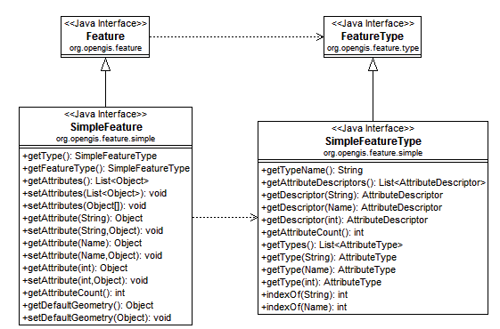

Profile of the general ISO 19107 feature model built around the idea of a simple feature
composed of a list of values.
A {@link SimpleFeature} is a wrapper around a list of values. The values are interpreted
based on order; and must be supplied in exactly the the order indicated by the {@link SimpleFeatureType}.

This model matches the assumptions of GeoAPI 2.1 and is applicable in a wide range of applications
from the representation of shapefiles; to simple database tables (with no external references).